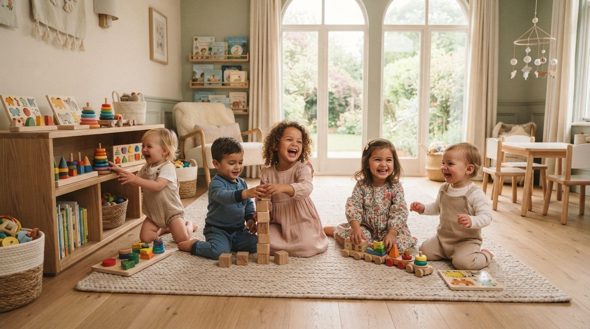
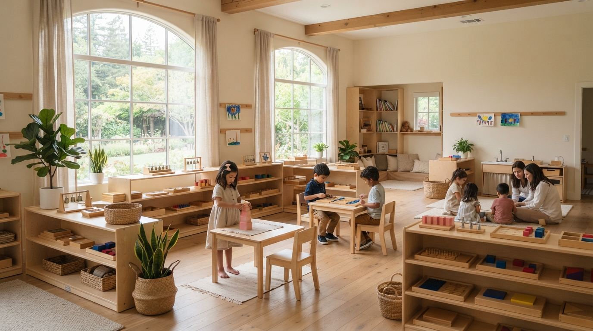
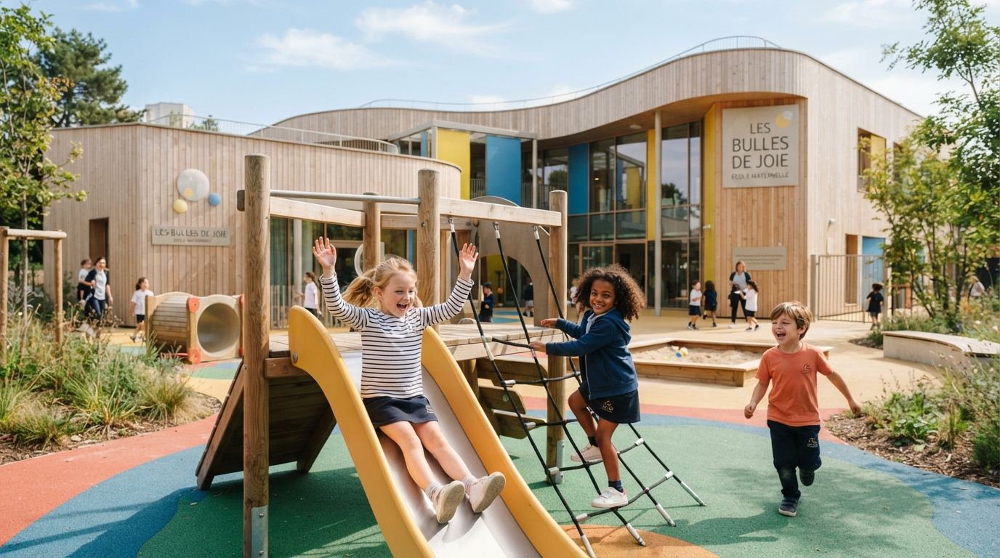

Notre Projet Pédagogique
Aux Bulles de Joie, nous croyons que chaque enfant est un individu unique capable d'un développement extraordinaire lorsqu'on lui offre l'environnement, les conseils et le respect appropriés.
Notre mission
"Offrir une éducation équilibrée qui valorise le génie présent en chaque enfant, adaptée aux exigences du monde actuel et qui favorise ses capacités créatives et constructives dès la base."
Amour
Travail
Discipline
Créativité
Nos Atouts
Ce qui rend l'expérience Les Bulles de Joie unique, au quotidien.
Un cadre sain et adapté pour un meilleur épanouissement.
Des enseignants qualifiés, passionnés et dévoués pour un enseignement de qualité.
Toutes les classes sont bilingues ; la prématernelle est enseignée exclusivement en anglais.
Une éducation bienveillante qui développe le sens de la créativité chez chaque enfant.
Cours de musique, jardinage, danse et art oratoire, en plus du programme scolaire.
Repas sains et équilibrés, et des lits confortables pour la sieste.
Nos Cycles
Un parcours continu, de la crèche au primaire, adapté au rythme de chaque enfant.

Les Fondations de la Découverte
Notre Crèche met l'accent sur l'exploration sensorielle et la sécurité émotionnelle. Nous offrons un espace sûr et calme où les nourrissons et les jeunes enfants peuvent découvrir le monde à leur propre rythme, construisant ainsi la confiance essentielle à l'apprentissage tout au long de la vie.
- check_circle Ouvert 7h–19h en semaine, 8h–17h le samedi
- check_circle Accompagnement bienveillant et cantine disponible
Nos Valeurs Clés

Premiers Pas en Anglais
Étape charnière entre la crèche et la maternelle, la prématernelle est intégralement enseignée en anglais : une immersion précoce qui pose, en douceur, les bases du bilinguisme.
Fondements de l'Indépendance
Les deux années de maternelle sont cruciales pour développer l'indépendance et les compétences sociales. Programme bilingue Français/Anglais, exercices de vie pratique et jeux collaboratifs dans un environnement préparé.

Élargir les Horizons
En école primaire, nous favorisons la pensée critique, l'excellence académique et la sensibilisation globale. Notre programme bilingue stimule intellectuellement les élèves tout en continuant à privilégier leur bien-être émotionnel et leur expression créative.
Envie de découvrir notre pédagogie en action ?
Planifiez une visite de nos locaux et rencontrez notre équipe pédagogique.
Planifier une visite